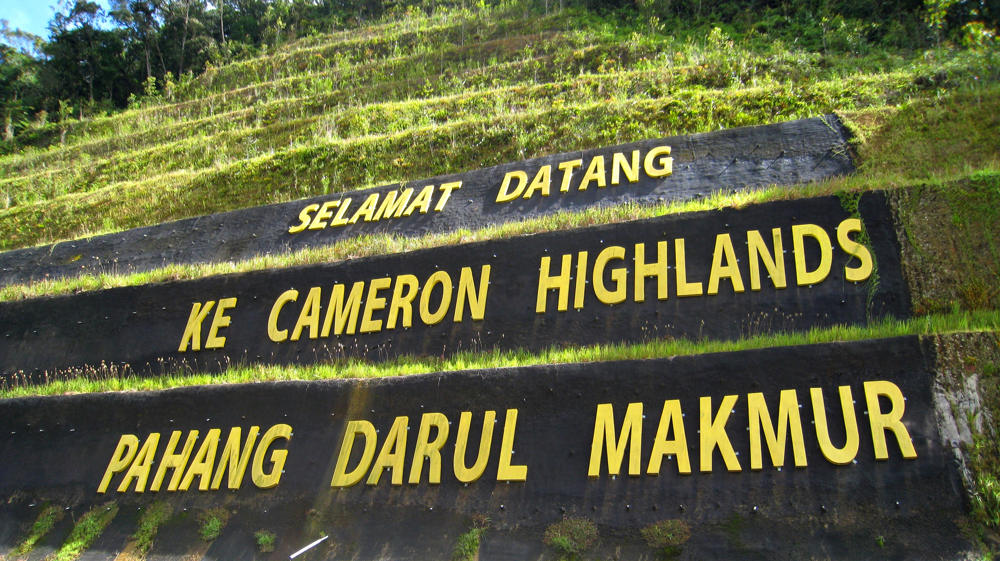
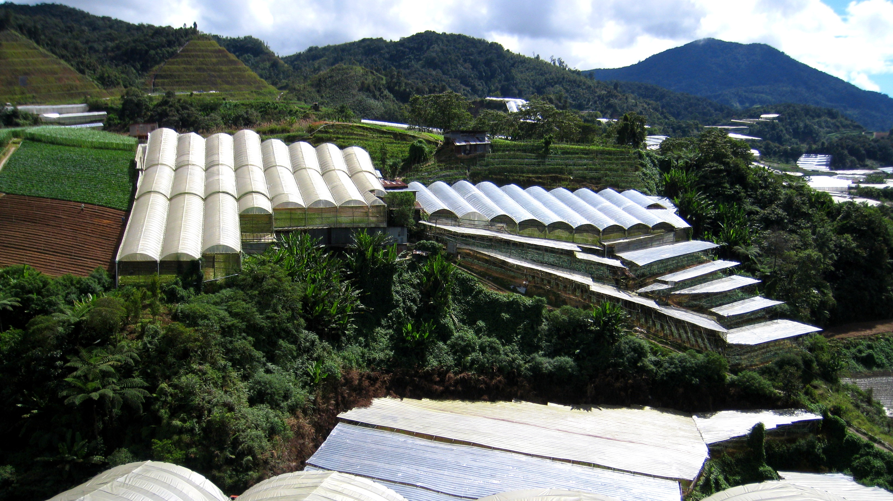
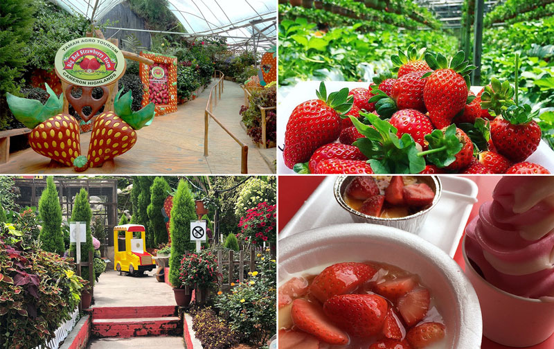
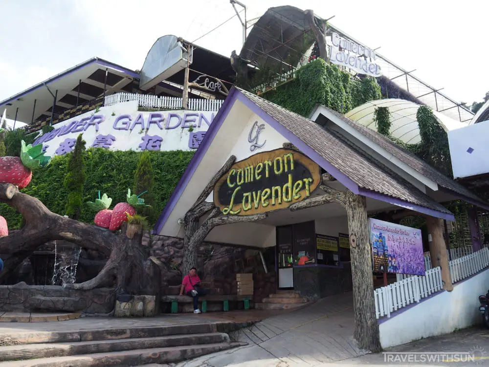
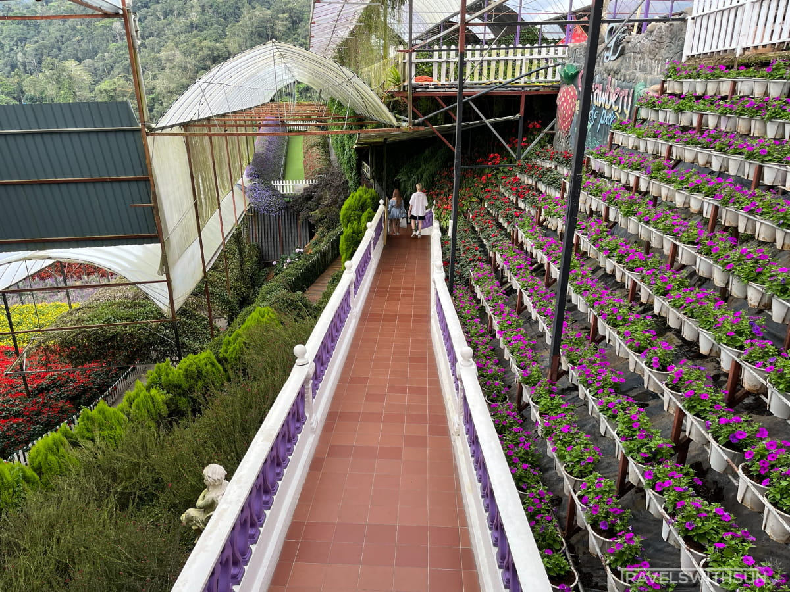
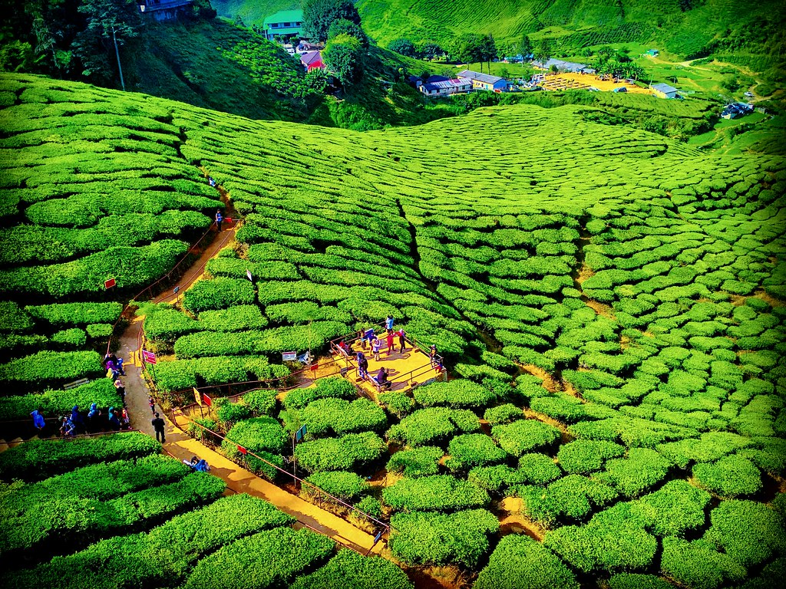
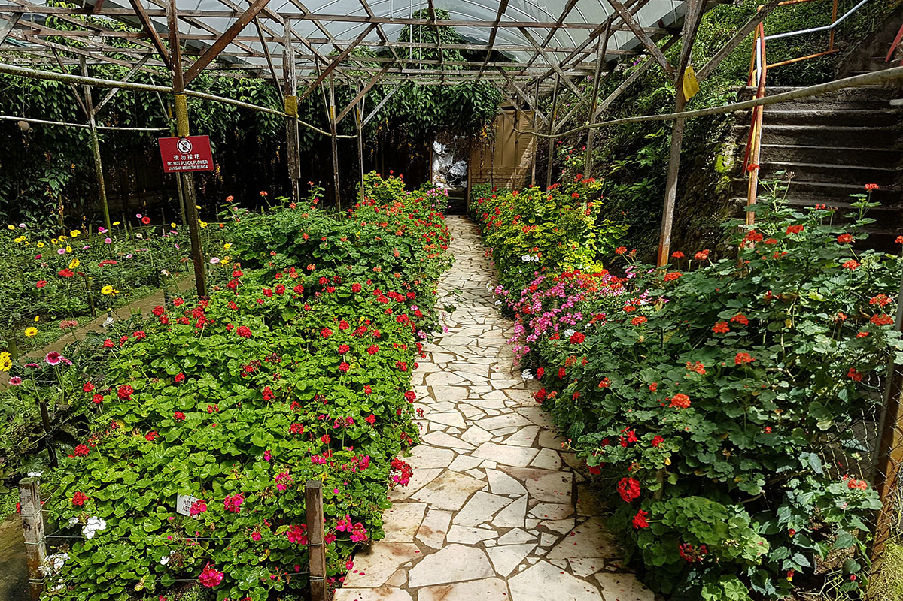

Visit Malaysia's Other Travel Destinations

Heritage & Culture

Adventure & Entertainment

Shopping
Explore Malaysia's Natural Beauty
Malaysia, a vibrant and diverse country in Southeast Asia, is a paradise for nature lovers.
From dense rainforests teeming with wildlife to serene beaches and mystical mountains, Malaysia offers an unparalleled eco-travel experience.
Whether you’re a seasoned adventurer or someone looking to reconnect with nature, Malaysia’s natural beauty will leave you in awe.
Join me as we explore the top eco and nature destinations in Malaysia, where the lush landscapes and rich biodiversity promise an unforgettable journey.
Taman Negara: The World’s Oldest Rainforest
Nestled in the heart of Peninsular Malaysia, Taman Negara is more than just a national park; it is a living, breathing testament to the planet's natural history.
With its rich tapestry of biodiversity and ancient ecosystems, Taman Negara is often described as the crown jewel of Malaysia's natural heritage.
For over 130 million years, this rainforest has remained untouched by the ice ages, making it one of the oldest rainforests on Earth.
Taman Negara, which literally translates to "National Park" in Malay, spans across three Malaysian states: Pahang, Kelantan, and Terengganu.
Covering an expansive area of over 4,343 square kilometers, this vast park offers visitors a chance to step back in time and experience the wonders of a primeval forest.
The air here is thick with humidity and the rich scent of earth, while towering trees form a verdant canopy overhead, sheltering a complex web of life below.
A Paradise for Wildlife Enthusiasts
Taman Negara is home to some of the most diverse wildlife in the world.
The park shelters endangered species like the Malayan tiger, Asian elephant, and the elusive Sumatran rhinoceros, although sightings are rare due to the dense forest cover.
More commonly, visitors can spot macaques, wild boars, and an astonishing variety of bird species—over 350 species to be exact, including the Great Argus pheasant and the Rhinoceros hornbill.
For birdwatchers, the park is nothing short of paradise. The melodic calls of the birds, interspersed with the rustle of leaves, create a natural symphony that is both soothing and invigorating.
Adventure Awaits: Activities You Can Do
-
Canopy Walkway:
The park boasts one of the world's longest canopy walkways, suspended 40 meters above the forest floor. Walking along this swaying bridge offers a bird's-eye view of the lush greenery and the chance to spot wildlife from a unique perspective.
-
Jungle Trekking:
For those looking to immerse themselves fully in the forest, Taman Negara offers countless jungle trekking routes. Whether it's a guided night walk, where you can encounter nocturnal creatures, or a longer hike to the top of Bukit Teresek, the trails will challenge and reward you with breathtaking views.
-
River Cruises:
The Tembeling River runs through the park, providing an alternative way to explore the area. A river cruise or boat ride offers a relaxing way to see the forest and its inhabitants, including occasional sightings of river otters and monitor lizards basking on the riverbanks.
Cultural Encounters
Beyond the wildlife and natural beauty, Taman Negara is also a place to connect with the indigenous peoples of Malaysia.
The Orang Asli, meaning "original people," have lived in harmony with the forest for centuries.
Tourists have the unique opportunity to visit Orang Asli villages.
These visits are often organized by local guides who have strong ties to the communities.
Here are some of the things you can expect during a cultural encounter in Taman Negara:
-
Traditional Craftsmanship:
One of the highlights of visiting an Orang Asli village is witnessing their traditional craftsmanship. The Orang Asli are skilled in making tools, weapons, and handicrafts using materials sourced directly from the forest. You can see them demonstrate how they make blowpipes, known as sumpit, which are used for hunting. The blowpipes are made from bamboo, and the darts are often tipped with natural toxins derived from tree sap, showcasing their deep understanding of the forest’s resources.
-
Cultural Performance:
In some villages, visitors might be treated to traditional music and dance performances. The Orang Asli use music as a way to communicate with the spirits of the forest and to celebrate significant events. Their music often features simple, yet hauntingly beautiful, melodies played on handmade instruments, accompanied by rhythmic drumming and chanting.
-
Survival Skills:
Learning about survival skills from the Orang Asli is an unforgettable experience. They demonstrate how to start a fire without matches, using nothing but rattan and bamboo. You can also observe their hunting techniques, including the use of the blowpipe and trapping methods that have been perfected over centuries.
The Cameron Highlands: A Refreshing Escape







Nestled in the Titiwangsa Mountains, the Cameron Highlands is a cool, refreshing escape from the tropical heat of Malaysia.
Known for its sprawling tea plantations, lush green hills, and vibrant flower gardens, the Cameron Highlands offers a unique blend of natural beauty and cultural experiences that captivate the hearts of travelers.
Tea Plantations: The Green Heart of Cameron Highlands
One of the most iconic sights in Cameron Highlands is its expansive tea plantations, where neatly trimmed rows of tea bushes stretch out across the rolling hills.
These plantations, established during the British colonial era, are not just about tea production; they are a significant part of the highlands' cultural and historical fabric and have become synonymous with the region and remain a must-visit for anyone traveling to the highlands.
Walking through these plantations, you can almost feel the colonial past of Malaysia, where tea became an integral part of the local economy and culture.
Here are some of the top recommendations for curious travellers:
-
BOH Tea Plantation:
As the largest and most famous tea producer in Malaysia, BOH Tea Plantation offers a unique glimpse into the world of tea production. The plantation, covering over 1,200 hectares, is located at a high altitude, providing the ideal climate for growing high-quality tea. Visitors can take a guided tour of the tea factory to learn about the intricate process of tea production, from picking the leaves to processing and packaging. The tour is both educational and immersive, ending with a visit to the plantation's tea house, where you can enjoy a fresh cup of tea paired with delicious scones while overlooking the breathtaking scenery.
-
Cameron Valley Tea House:
Another popular destination, the Cameron Valley Tea House, offers an equally stunning view of tea-covered hills. Managed by Bharat Tea Plantation, this location allows visitors to walk through the tea fields, learn about the history of tea in Malaysia, and sample a variety of teas. The tea house also has a gift shop where you can purchase different blends of tea to take home.
-
Sungai Palas Tea Garden:
Sungai Palas Tea Garden is a BOH-owned tea plantation which is located in Cameron Highlands, Malaysia. The Chairman, Tristan Russel, transformed the land into a garden of beautiful tea that has become a tourist attraction. In order to ensure the visitors can be accommodated properly, in 2007 BOH built a visitor center and cafe. Here, one can be acquainted with the history as well as the culture of tea in Malaysia, and enjoy a cup of tea and local snacks. The tea factory is another popular wherein tourists can participate in a free informational excursion that explains the way of making tea using traditional methods and buy BOH tea as a souvenir.
Lush Gardens: A Blooming Wonderland
Cameron Highlands is also home to a variety of gardens that showcase the region's diverse flora.
The cool climate is perfect for cultivating a wide range of plants, making these gardens a delightful attraction for nature lovers and horticulturists alike.
-
Strawberry Farms:
Strawberry farms are one of the most iconic attractions in Cameron Highlands, Malaysia.
The cool, temperate climate of the highlands provides an ideal environment for strawberry cultivation, making these farms a must-visit for tourists.
Some of the popular strawberry farms include Strawberry Farm Green View Garden, Big Red Strawberry Farm, YZ Strawberry Farm and Cafe and KHM Strawberries & Jam.
Here’s a deeper look at what makes the strawberry farms of Cameron Highlands so special.
-
Fresh Strawberry Picking Experience:
Visitors to the strawberry farms can engage in a hands-on experience by picking their own strawberries. This activity is particularly popular among families and children, as it allows them to select ripe, juicy strawberries straight from the plant.
-
Variety of Strawberry-Based Products:
Beyond the fresh fruit, many farms also offer a range of strawberry-based products, such as jams, chocolates, ice creams, and even fresh strawberry juices. These products are often made on-site using freshly picked strawberries, ensuring high quality and rich flavors.
-
Scenic Views and Photo Opportunities:
The strawberry farms are often set against the picturesque backdrop of Cameron Highlands’ rolling hills and lush greenery. This setting provides stunning views and ample photo opportunities for visitors looking to capture their experience.
-
Lavender Garden:
This garden is a vibrant, fragrant paradise, with rows of purple lavender blooms creating a mesmerizing landscape. The garden is not only about lavender; it also features other flowers, such as daisies and roses, adding to the colorful display. Visitors can stroll through the garden, take pictures among the flowers, and even purchase lavender-themed souvenirs like essential oils, perfumes, and soaps. The Lavender Garden also has a café where you can try lavender-flavored ice cream and other treats.
-
Rose Valley:
For those who love roses, the Rose Valley is a must-visit. This garden houses hundreds of different rose varieties, from classic red roses to unique hybrids in various colors. The garden is beautifully arranged, with roses climbing trellises, lining walkways, and filling the air with their sweet scent. Rose Valley also offers a selection of other plants and flowers, including orchids and carnivorous plants, making it a diverse botanical experience.
-
Butterfly Garden:
The Butterfly Garden in Cameron Highlands is a delightful spot for visitors of all ages. It houses a variety of butterfly species that flutter freely around the garden. In addition to butterflies, the garden also has a small insect and reptile section, where you can learn about the highland's unique fauna. The colorful butterflies, coupled with the blooming flowers, make for a picturesque and educational experience.
-
Vegetable Farms:
Beyond flowers, Cameron Highlands is famous for its vegetable farms. The cool climate allows for the cultivation of various vegetables like lettuce, cabbage, and tomatoes. Some farms are open to visitors, where you can learn about sustainable farming practices and even purchase freshly harvested produce. These farms are a great way to see how the highlands contribute to Malaysia’s agriculture and food supply.